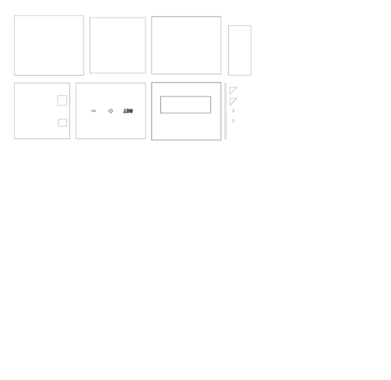
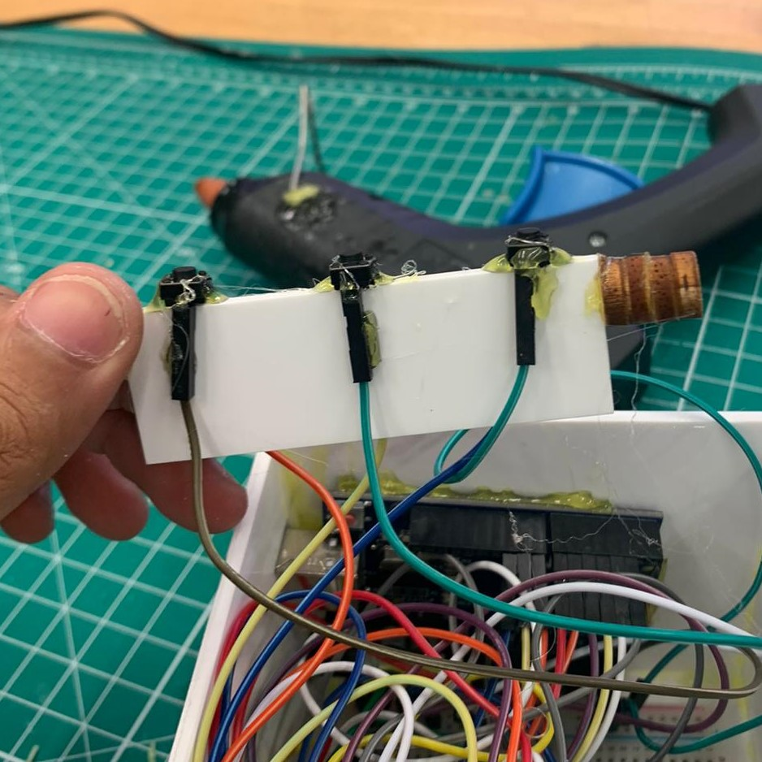
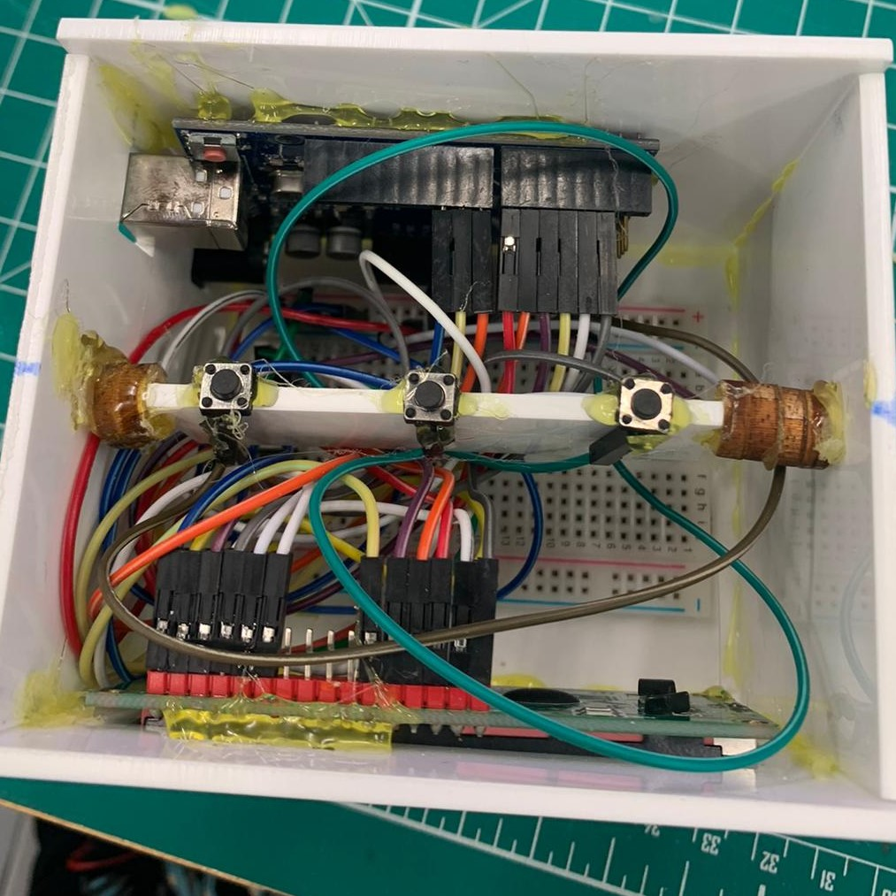
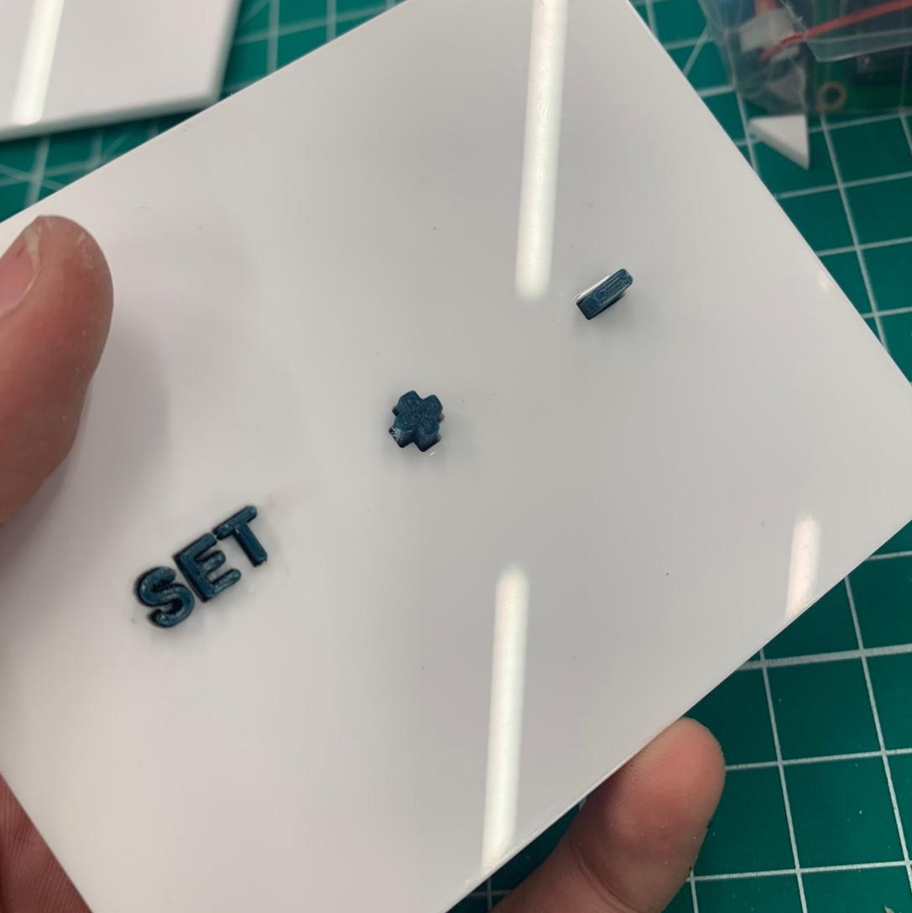
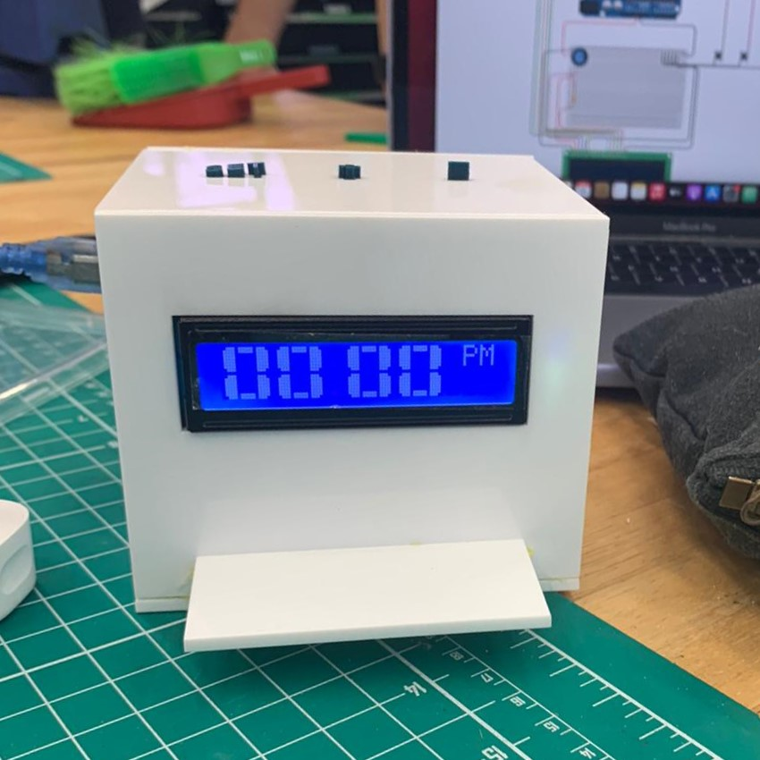

For my final project, i made a Digital Clock for a study table that also holds any small toys as decoration. Final product shown below.
{kind=link}
Information
Software Used
Autodesk Fusion 360 Autodesk Tinkercad CorelDRAW Arduino IDE Ultimaker Cura
Hardware Used
Creality3D Upgraded Ender-3 V2 3D Printer Epilog Fusion M2 Laser Cutter
Bill Of Materials

*price may vary*
Ciruit Diagram
{kind=link}
The circuit diagram and code are reffered from:
Mohd Sohail. Arduino Digital Clock. [online] Available at: https://create.arduino.cc/projecthub/mohammadsohail0008/arduino-digital-clock-0e9c11.
3D Modelling
Draft Sketch

{kind=link}
Final Design
The main structure will be acrylic which will be laser cut while the buttons are 3D printed


Laser Cutting
The sketch from the Fusion 360 design was transferred to CorelDraw for laser cutting
{kind=link}
The lines weight is changed to hairline. The file is then uploaded to the Epilog Fusion M2 Laser Cutter and the cutter will proceed to cut the acrylic to spec.
Unfortunately i did not take pictures of the laser cutting process.
3D Printing
The 3D Design from Fusion 360 is transfered to Ultimaker Cura for configuration
{kind=link}
The buttons are considered small. Therefore, the infill is changed to the maximum to make the buttons stronger.
Assembly
Firstly, upload code for arduino board through the arduino software
Secondly, the circuit is connected as shown in the circuit diagram above.
Thirdly, the acrylic is glued together and the breadboard, arduino uno, and lcd display are glued to the acrylic as shown below.
{kind=link}
Fourthly, mount the pushbuttons of another piece of acrylic
{kind=link}
Fifthly, glue the acrylic in place
{kind=link}
Finally, place the 3D Printed Buttons in place and cover the top of the structure with it
 {kind=link}
{kind=link}
The clock will then be able to be connected by a power source and the time can be set
How to change the time
1) Hold the "set" button for approximately 3 seconds
2) Press the "+" or "-" button to adjust the minute
3) Press "set" again to confirm your minute setting and move on to the hour setting
4) Press the "+" or "-" button to adjust the hour
5) Press "set" again to confirm your hour setting and move on to the "am" & "pm" setting
For a visual presentation, click here to watch a youtube video i created.
Unfortunately, when the clock loses power, the time has to be set again when it is back on as it the circuit does not
have a RTC Module to save the preset time when it loses power.